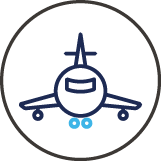
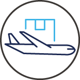

in Story & News
대한민국을 대표하는 날개로
세계 최고의 하늘길을 열다
대한항공
대한항공은 1969년 3월 출범한 이래 56년간 하늘길을 개척하며 글로벌 항공사로 이름을 알렸다. 지난 3월에는 41년 만에 새로운 CI 등 프리미엄 브랜드 아이덴티티를 공개하며 국내외에서 뜨거운 주목을 받기도 했다. 우리나라를 대표하는 항공사로서 글로벌 항공업의 비전을 제시하는 대한항공을 소개한다.
글 김혜원
사진 제공 대한항공
보유 항공기
163대(2025. 04.)
여객 수송
2,355만 명(2024)
취항지
40개국 117개 도시(2025. 04.)
40개국
117개 도시(2025. 04.)
화물 수송
156만 톤(2024)
대한민국의 작은 항공사에서 세계를 선도하는 항공사로
1969년 3월 우리나라 최초의 국적 민영항공사가 탄생했다. 적자에 시달리던 국영 대한항공공사를 한진상사가 인수하며 사명을 대한항공으로 변경한 것이다. 우리나라 민항 역사의 중요한 첫걸음이었지만 시작은 결코 순탄하지 않았다.
한진상사가 대한항공공사를 인수할 당시 공사의 경영 상태와 규모는 열악했다. 누적적자가 심각한 데다 국내외 은행 빚은 27억 원 남짓(2024년 현재 가치 약 769억 원)이었다. 보유한 인프라는 노후 항공기 여덟 대에 일본을 잇는 국제선 세 개가 전부였다. 결항률 역시 세계 항공 역사상 유례가 없는 17.5%에 달했다. 운영에 한계를 느낀 정부는 한진그룹 창업자 조중훈 사장에게 인수를 제안했고, 그는 기나긴 숙고 후 대한항공공사를 인수하기로 결심했다. 오직 수송보국의 정신으로 사익보다 공익을 우선한 결단이었다.
조중훈 사장은 대한항공의 경영을 하루빨리 정상화하겠다는 일념으로 조직 개편과 안정화, 철저한 인사 관리 등으로 내실을 다졌다. 1969년 12월에는 글로벌 항공사로 비상하기 위해 5개년 사업 계획을 세우고 최신형 항공기 도입, 노선 개척, 업무 전산화 등을 과감하게 시행했다. 그 결과 대한항공은 1969년 35억 8,000만 원에서 1970년 76억 1,000만 원으로 매출이 두 배 이상 증가하며 정상 궤도에 진입하기 시작했다.
일본과 동남아시아를 발판으로 꾸준히 국제선을 늘린 이후에는 미주와 유럽 진출도 목표로 삼았다. 끊임없이 문을 두드린 끝에 대한항공은 1972년 4월 미주(서울-도쿄-호놀룰루-로스앤젤레스) 노선, 1975년 3월 프랑스(서울-파리) 정기 여객편을 취항했다. 또한 세계 항공업계의 변화와 내국인의 해외여행 자유화 등에 발 빠르게 대응하며 대양주와 남미 등에 진출해 1990년대 마침내 세계 일주 노선망을 구축해 냈다. 2025년 4월 현재 대한항공은 항공기 163대로 전 세계 40개국 117개 도시에 취항하는 글로벌 항공사로 성장했다.
고객의 안전과 만족을 위해
이렇게 성장하기까지 국제 오일쇼크, IMF 외환위기, 9.11 테러와 사스 등 무수한 부침을 겪었지만 대한항공은 위기를 슬기롭게 극복해 냈다. 코로나19 팬데믹으로 전 세계 항공업계가 줄줄이 타격을 입었을 때도 마찬가지였다. 대한항공은 선제적으로 화물 사업에 집중해 글로벌 물류 시장의 혁신을 주도했다. 여객기의 화물기 전환과 같은 발상의 전환은 물론 오랜 기간 축적해 온 화물 운송 노하우와 서비스가 바탕이 된 것이다. 팬데믹 시기에도 꺾이지 않은 성과를 인정받아 호주 에어라인레이팅 주관 2022 에어라인 엑셀런스 어워즈(Airline Excellence Awards)에서 올해의 화물 항공사, 아시아 지역 장거리 노선 최고 항공사, 올해의 톱20 항공사 4위에 각각 선정되는 쾌거를 이뤘다.
다양한 가치 가운데 대한항공이 최우선으로 고려한 것은 언제나 고객의 안전과 만족이었다. 대한항공은 이사회 산하 안전위원회 활동으로 꾸준히 안전 이슈를 관리하며, 인공지능컨택센터(AICC) 플랫폼을 구축해 챗봇 서비스를 확대하고 있다. 해외 유수의 브랜드와 협업해 기내식 식기, 커트러리, 베딩과 어메니티 전반을 리뉴얼하기도 했다. 고객 서비스 향상을 위한 꾸준한 노력을 국내외에서 인정받아 국내 항공사 최초 소비자중심경영(CCM) 3회 연속 인증, 영국 스카이트랙스 주관 스카이트랙스 에어라인 레이팅(Skytrax Airline Ratings)에서 5년 연속 ‘5성 항공사’ 선정, 세계적 항공 전문 매체 에어 트랜스포트 월드의 ‘항공업계 명예의 전당’ 헌액 등의 영광을 누렸다.
세계를 잇는 하나의 길, KE Way
최근 대한항공은 국내 항공업 발전이라는 국가적 사명을 달성하고자 아시아나항공 인수와 통합에 최선을 다하고 있다. 2020년 11월 아시아나항공 인수를 결의한 이후 14개국 경쟁당국에서 진행한 기업결합심사를 마무리하고, 작년 12월 아시아나항공을 대한항공의 자회사로 편입시킨 상태다.
한편 대한항공은 올해 3월 창립 56주년을 맞이해 새로운 기업 가치 체계 ‘KE Way’를 선포하고, 모두에게 신뢰받고 사랑받는 글로벌 네트워크 캐리어로서의 도약을 다짐했다. 또한 태극마크를 절제된 현대적 이미지로 재탄생시킨 신규 CI와 새로운 항공기 도장(Livery)을 공개하며 우리나라를 대표하는 국적 항공사로서의 프리미엄 브랜드 이미지를 드러냈다. 대한항공은 트렌디한 신규 기내식과 리뉴얼된 기내 서비스를 전 노선에 확장하며 고급화한 기내 경험을 제공하는 등 고객과 사회, 전 세계를 연결해 더 나은 세상으로 나아갈 계획이다.